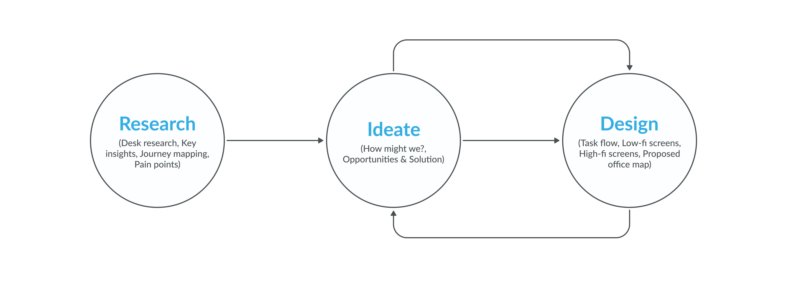
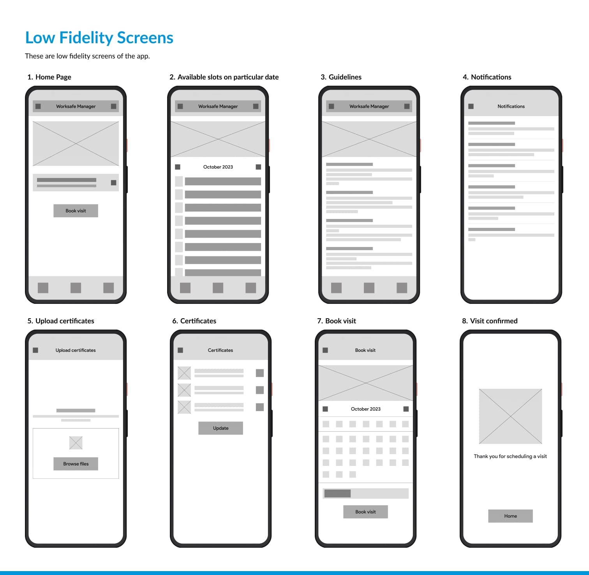
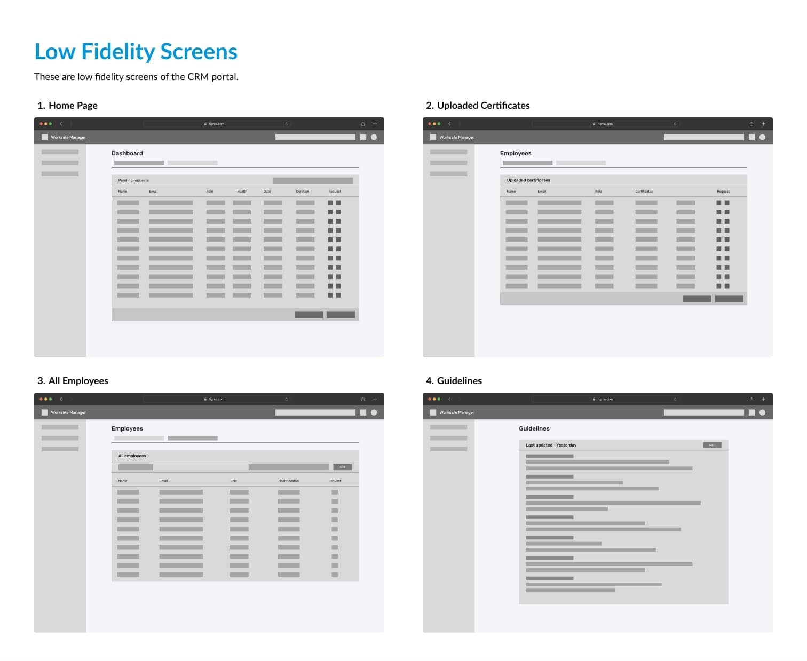
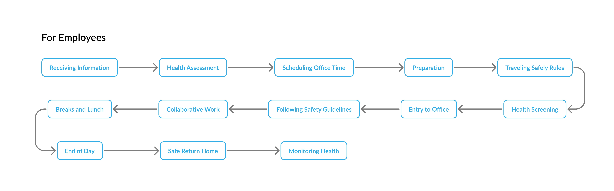
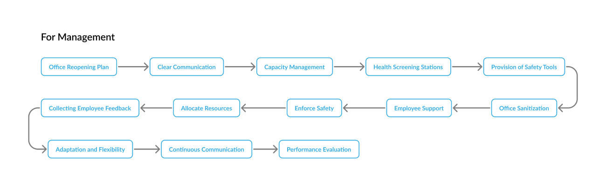

COVID-Safe Office Management
UX CASE STUDY
This project aims to enhance workplace safety and efficiency through a streamlined system allowing employees to book office visits and management to monitor health status and attendance.
Roles & Resposibilities
- User Research: User Interviews, Desk Research, Journey Mapping
- UX Design: Task Flow, Sketches, Low-Fidelity, Proposed Office-Map
Project Context
- September - October 2023 (10 Weeks)
- Solo Project
Tools Used
- Figma
- Microsoft Office
Problem
A big company with more than 1200 employees initially made everyone work from home because of COVID-19. But now, as things are getting better, they're thinking about how to let some employees return to the office, but not all of them.
But there are problems to solve:
- How can they verify that employees intending to return to the office are healthy and not carrying the virus?
- How can they efficiently manage employees who want to work from the office?
- What steps should they take to ensure social distancing in the office?
- What's the most effective way to implement COVID-19 safety measures?
Tackling the problem
This was my design process for this particular project.
Research
I conducted a lot of desk research and spoke to several managers of companies to understand how they manage and what problems they are facing in COVID. From this, I found some key insights.

Ideation
How Might We?
1. How might we verify that employees returning to the office are healthy and virus-free?
2. How might we efficiently manage employees who want to work from the office?
3. How might we ensure social distancing in the office?
4. How might we effectively implement COVID-19 safety measures?
5. How might we reduce the commuting-related worries and stress for employees returning to the office?
Low-fidelity screens
I transformed my sketch into low-fidelity screens.
 Task flow
I designed task flows for both employees and management.
 Solution
Introducing WorkSafe Manager, where employees book their office visits and the management team decides which employees need to be in the office based on their requirements.
I integrated this as a feature into their existing management CRM portal. It is cost-friendly and will be developed in no time.
For employees
- Upload certificates and schedule office visits easily on the homepage for a hassle-free experience.
- Access office guidelines to understand how to conduct yourself safely at work, ensuring everyone's well-being.
- Provide vaccination and COVID test certificates to ensure health and safety measures are met for office visits.
- Choose visit dates and book slots conveniently, giving flexibility in planning office visits.
- View available slots and plan upcoming office visits like checking a calendar for open dates.
- Receive notifications for system updates, keeping you informed at all times.
For management
- Managers can see who's coming to the office and approve visit requests, keeping everything organized.
- Managers can easily check employees' certificates to ensure everything is in order, making verification simple.
- A dedicated section lets managers track employees' health status, allowing quick updates as needed.
- Management can adjust office guidelines as necessary, keeping rules up to date and flexible.
- Managers can assign reporting times and office locations to employees, ensuring everyone knows where and when to be.
Proposed office map
In my proposed office layout, I've considered the diverse needs of our employees and the importance of their well-being.
Block A: Reserved for our core team members who must be present daily, we've implemented a rotating schedule. For instance, a team of four might have two members in the office on Monday, Wednesday, and Friday, and the other two on Tuesday and Thursday.
Block B: For employees not required in the office daily, they can reserve space through a booking system when needed, offering flexibility in choosing office workdays.
Block C: Exclusive space for our management team to facilitate effective collaboration and decision-making.
Health Checkup: Equipped with temperature checkers and health monitoring tools, this center ensures all employees undergo regular health checks, promoting a safe working environment.
Key takeaways
1. I've come to realize that thorough research plays a crucial role in the success of any project, helping us understand the problem and its context more deeply.
2. When designing a system, it's become apparent that various challenges may arise along the way. To ensure a smooth project execution, it's essential to address these issues promptly, as any mistakes can have real-life consequences.
3. During the ideation phase, I encountered moments of creative blockage. However, I've embraced the idea that perseverance is key. Even when faced with hurdles, I continued sketching and brainstorming potential solutions.
4. One valuable lesson I've learned is the significance of dedicating more time to refining the design screens and seeking feedback from friends and fellow designers. This iterative process results in screens that are not only visually pleasing but also easy for users to comprehend.
5. This project has provided a unique perspective on problem-solving. Unlike projects with clear financial objectives, the primary goal here is to address and resolve challenges in the most cost-effective manner, emphasizing the importance of efficiency and effective solutions over profit generation.